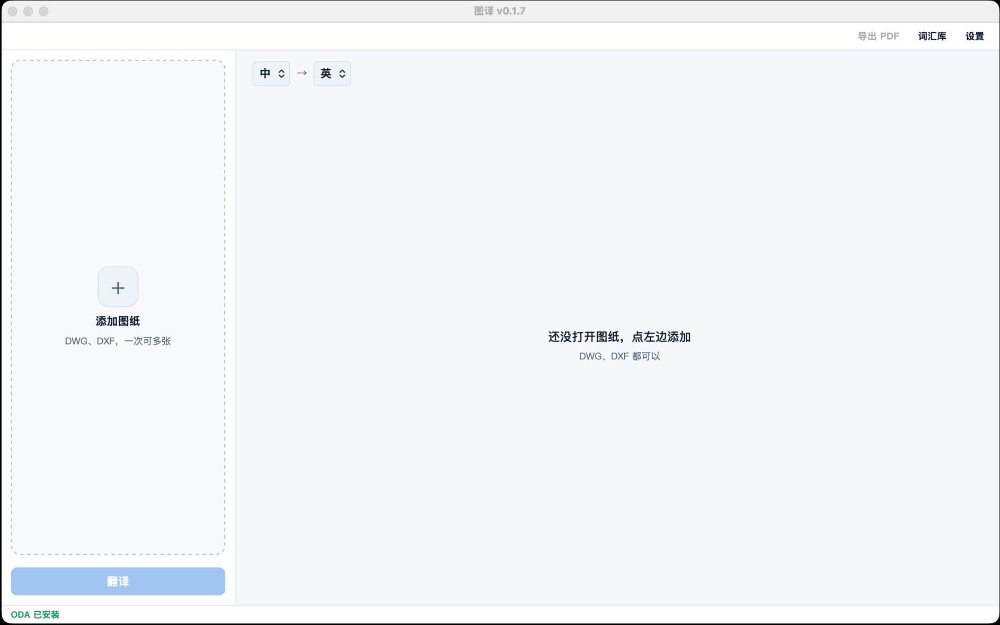

图译
下载
图译
下载

Windows
10 / 11，只要 64 位。Setup.exe。
下载 exe →Mac · Apple 芯片
M1 及以后。一份 DMG。
下载 arm64 →Mac · Intel
不是同一份。下错了打不开。
下载 Intel →下之前看一眼
- 要 AutoCAD 吗？
- 不要。DXF 直接读。DWG 自己装 ODA File Converter，图译不打包它。
- 第一次拦下来？
- 安装包还没签名。Mac 右键打开。Windows 更多信息 → 仍要运行。
- 谁付钱给翻译引擎？
- 你自己。DeepL / Azure / Ollama / 自定义接口。图译不建账号，MIT。